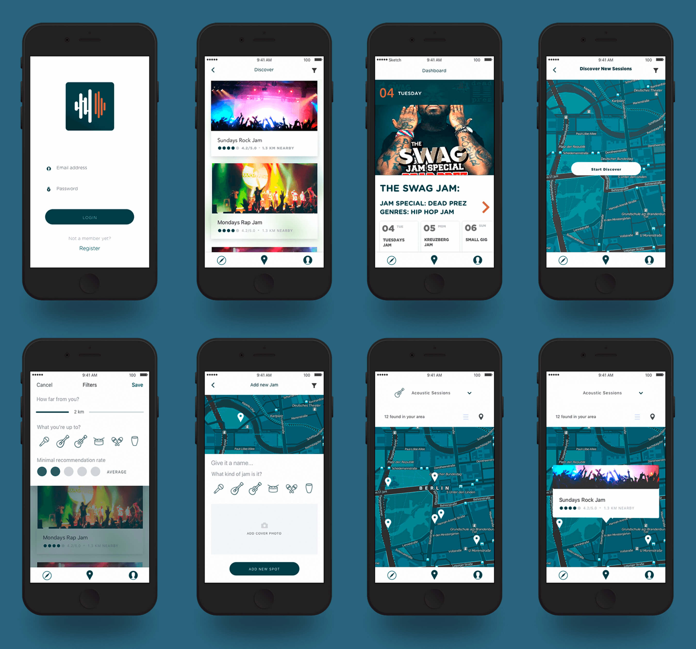
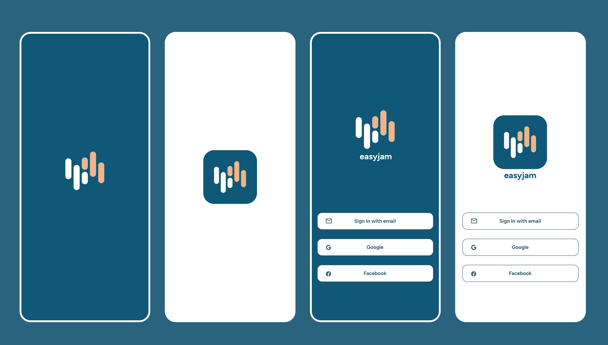
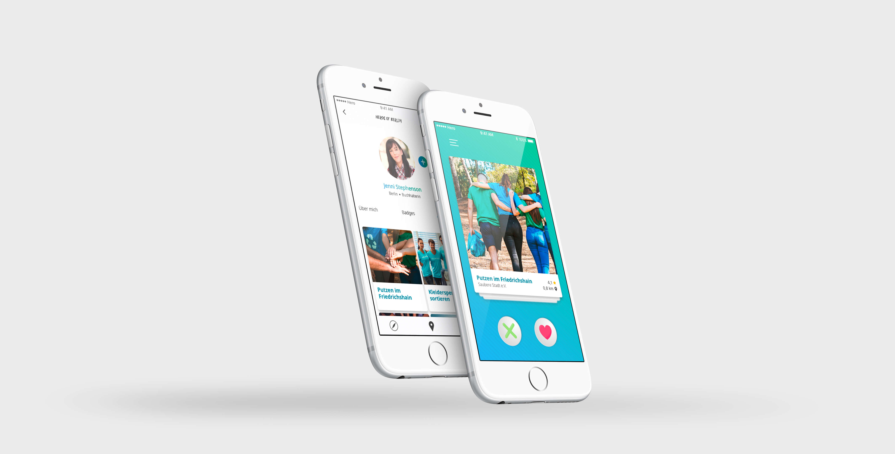
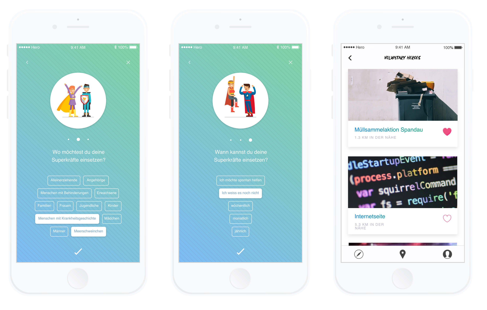
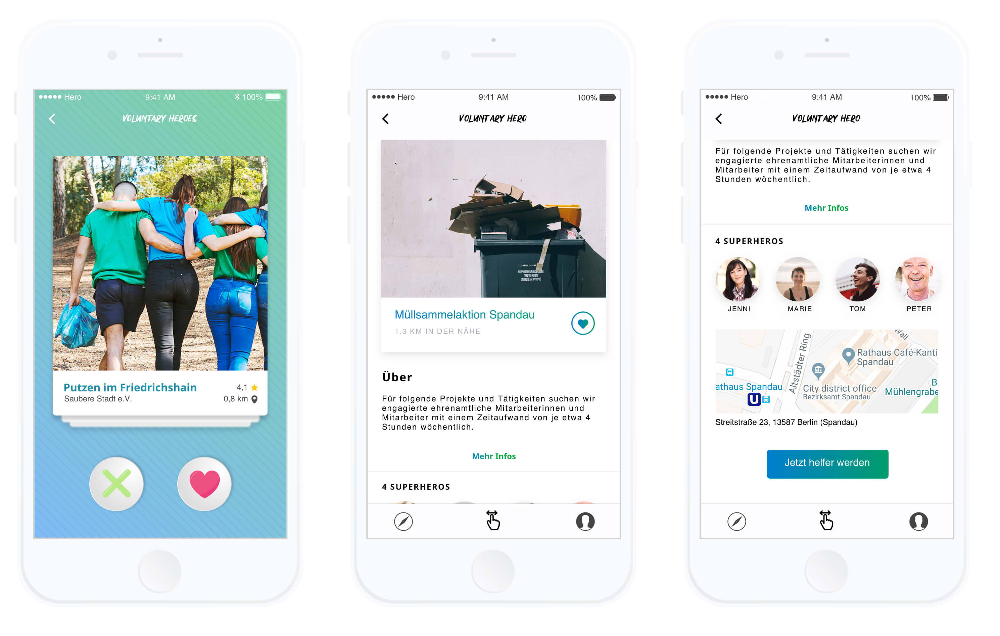
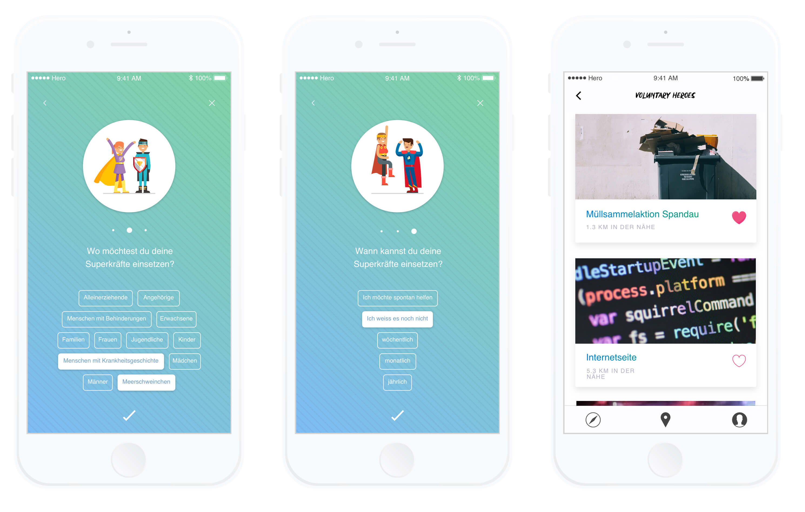
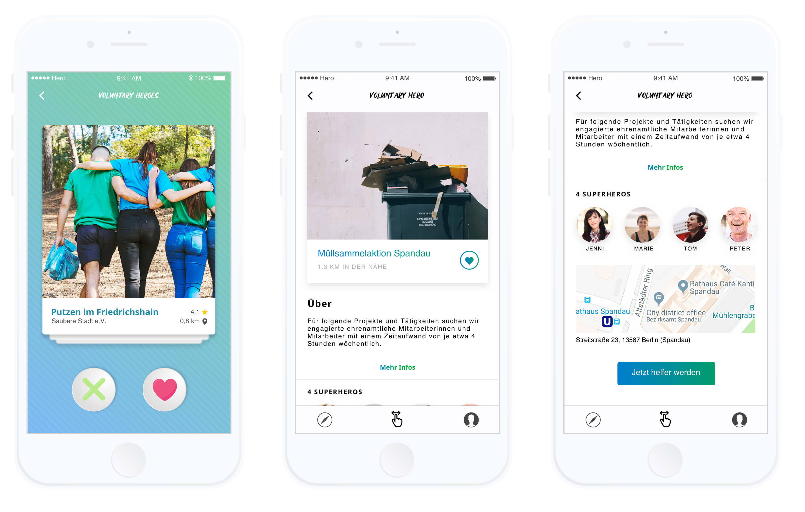

EasyJam - find the right jam!
In the pursuit of designing a prototype for the spontaneous creation of urban jam sessions, we were intrigued to discover a noticeable gap in the music application market. Surprisingly, there is a scarcity of platforms dedicated to organizing and fostering communal musical experiences. This shared observation fueled our joint enthusiasm to develop a solution that addresses this unmet need, aiming to enhance the way people connect through music.
Mobile screen design
The provided screen design offers a visual representation of the fundamental concept behind the app, designed to facilitate impromptu jam sessions in urban locales. As a user, you have the ability to effortlessly initiate an event at your current location or explore existing events within your proximity.
Logo redesign and login page
Here is an example of the redesigned logo and login page, featuring a more modern and contemporary approach:
Voluntary Heroes
In collaboration with Nick Zegender, we have dealt with the topic of volunteer work in Berlin. It was important for us to analyze how far the honorary office has already been digitized and what steps are missing to make the most of the technical possibilities. The result is a prototype of an application that enables citizens to find the right honorary position.
Our exploration began with a thorough analysis of Berlin's diverse volunteer landscape. Recognizing the pivotal role technology plays in shaping societal engagement, we set out to uncover the existing digital footprint within the realm of honorary work. It was imperative for us to understand the current state of digitization, identifying gaps and opportunities for improvement.
Crafting a Prototype for Change
In collaboration, we meticulously crafted a prototype application designed to empower citizens in their quest to find the ideal volunteer position. This innovative solution seeks to bridge the gap between passionate individuals and impactful opportunities. The application not only streamlines the search process but also introduces a user-friendly interface that maximizes the benefits of technological advancements.
 

Next project - FH-Potsdam Redesign


Next project - FH-Potsdam Redesign